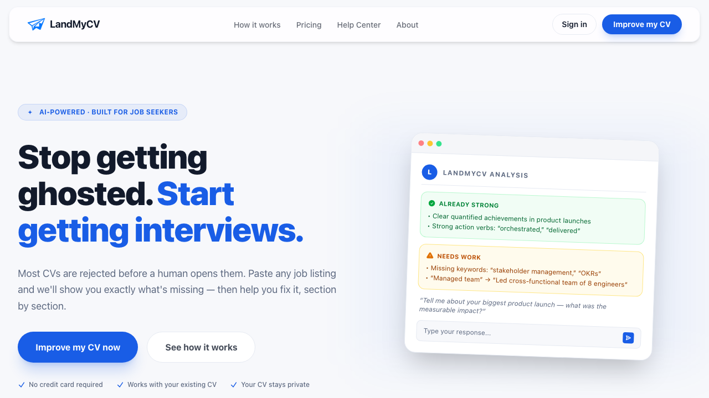

LandMyCV
A web app that improves a CV and tailors it to a specific job description. Launched Mar '26.
Why I built itI sent over 100 CVs and got back barely a handful of replies, so I built a tool that shows what to fix in a CV and tailors it to each job.
- It addressed three problems: few replies with no reason given, no clear idea what to fix in the CV, and the hours spent tailoring each application.
- It launched in Mar '26 at landmycv.com.
- I paused it in Apr '26 because general models now tailor a CV well. The steps moved to cv-tailor.
Live at landmycv.com (paused). The steps continue in cv-tailor.
- Status
- live, paused
- When
- Feb '26 to Apr '26 (live since)
- Type
- Web app
- My role
- Solo
The product question
Can I build a platform that improves how often a CV leads to an interview? Then, how do I make money from it, and is it valuable enough to pay for?
Scope
- Launched Mar '26
- the public launch of landmycv.com
- 7-step onboarding
- the steps a new user completes before the first CV improvement

Screenshot of the live site, taken Oct '26.
What I tried
A CV that gets few replies does not say what to fix, so I wanted a tool that shows it.
- LandMyCV improves a main CV, then tailors a version for each role.
- A 4-phase conversational loop runs the work and an application pipeline tracks each job.
- The result exports to DOCX or PDF.
- Pricing is free plus monthly and quarterly plans. I chose monthly and quarterly plans for job searches that last a few months.
- I built it alone with Next.js and Supabase, with Claude through the Anthropic SDK.
- The code came from Windsurf, Claude Code and Codex. An AI code review ran on the changes.
Decision timeline
Started building alone with Next.js, Supabase and Claude through the Anthropic SDK.
Priced as free plus monthly and quarterly plans for job searches that last a few months.
Launched.
Paused development. The steps went into cv-tailor.
Still online at landmycv.com.
Questions I asked along the way
Is an annual plan worth offering?
- Option rejected
- An annual plan. I priced LandMyCV for job searches that last a few months, with monthly and quarterly plans.
- What happened
- Pricing launched as free plus monthly and quarterly plans.
What do I charge for: the insight or the download?
- Option rejected
- Charging for the analysis. The insight is what convinces a visitor the product works, so it stays free.
- What happened
- The DOCX and PDF download became the paid part. Sign-in went in last.
Do I keep developing LandMyCV?
- Option rejected
- Continuing it as a product. General-purpose models could now tailor a CV well when given the right steps.
- What happened
- I paused development and the site stays online. The steps moved into cv-tailor, a free repo.
What happened
Still online, development paused. The app launched in Mar '26 and is still online at landmycv.com.
- I paused development in Apr '26.
- By then general-purpose AI models could tailor a CV well when given the right steps, so the steps mattered more than the app.
- They continue in cv-tailor, a free repo.
What I took from it
- The AI does one step. The product is the whole workflow: main CV, tailored versions, pipeline and export. It now lives in cv-tailor.
- The steps are free in cv-tailor. In LandMyCV the DOCX and PDF download was the paid part.
- I built sign-in last. The main quality risk was getting consistent output from the AI, which is why cv-tailor ends every run with a change log you read.